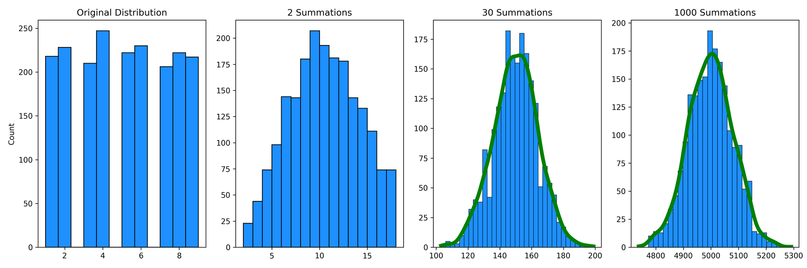
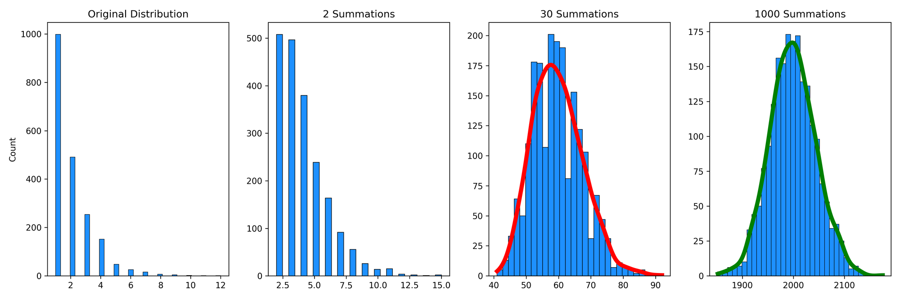
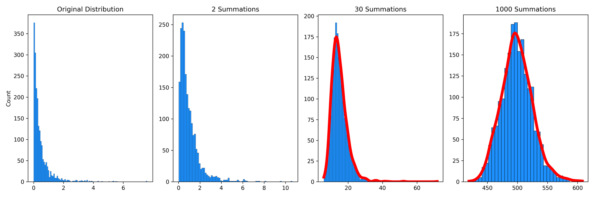

What Is the Central Limit Theorem? A Non-Technical, Visual Introduction
Students are taught the central limit theorem (CLT) in every introductory statistics or research methods course. Usually, it's glossed over relatively quickly and explained as something along the lines of "with enough samples (usually ~30), your data will be normally distributed". This property is essential for most classic frequentist tests used in science.
However, this quick treatment (and perhaps sloppy definition) doesn't do justice to just how incredible the CLT is. Visually walking through some examples of the CLT in action is beneficial for three reasons. First, it provides a much more interesting and helpful introduction to what it is and why it works. Second, it will help build intuition regarding how quickly different distributions converge to a normal distribution (hint: it's sometimes not feasible to assume that we'll have enough samples for the distribution to converge). Third, I'm a big fan of reviewing classic concepts in slightly different ways to improve foundational statistical knowledge.
Without further adieu, here is a non-technical introduction of the CLT (along with some Python code if you'd like to play around with some of this stuff yourself)!
What is the CLT?
Before jumping into the CLT, let's quickly review another critical concept. First, what is a random variable? More formally, a random variable \(X\) is a mapping defined on some sample space \(\Omega\) to \(\mathbb{R}\). More simply, it's a value that we assign to some event from an underlying probability distribution. For example, a random variable could represent something as simple as flipping a coin and getting heads (0) or tails (1), or something relatively more complex like sampling the net extensor moment at the knee from people performing back squats.
Now, let's outline what the CLT is a bit more rigorously. I was inspired to go through this exercise and write this blog post due to Nassim Taleb's recent video where he explains the CLT quite succinctly:
Let me summarise his points below for those who don't want to watch the entire video. Let's say we have some random variables \(X_1, X_2, \dots , X_n \) drawn from the same distribution. If each observation has finite variance, then the sum, and thus the mean, of these variables becomes stable as \(N\) becomes large. This "stable" mean refers to the convergence to a Gaussian (normal) distribution (if the observations did not have finite variance, the sums would converge to a different distribution, but that's beyond the scope of this article). Another way to phrase this is that, if we were to sample from a distribution randomly, the difference between the distribution of means of each random sample and a standard normal distribution would go to zero as the number of samples goes to infinity. This description is how the following StatQuest video presents the CLT:
The critical realization is that this theorem holds under summation of random variables \(X_1, X_2, \dots , X_n \) and not just with the sample means \(\bar{X}_n\). This property of the CLT is what Taleb is referring to and what we will leverage for this exercise for simplicity (however, you could easily adjust the code I've written to "replicate" the StatQuest video).
In the next section, I'll define random variables sampled from a variety of distributions. Then, I'll sum them so we can watch the distributions start to converge (or not) to a normal distribution. It sounds boring, but seeing this in action is super helpful for understanding why the CLT allows us to treat different underlying distributions as normal distributions so long as we have enough samples.
The CLT in action
Python code
I've included Python code in the following sections so you can work through or even modify the figures below. First, you'll need to import the libraries:
import numpy as np
import matplotlib.pyplot as plt
import seaborn as sns
from scipy import statsNext, the following functions will allow us to create random variables from different distributions, sum them, and cleanly plot them:
def create_random_variables(distribution, n):
d = {}
for i in range(n):
if distribution == 'uniform':
d["var{0}".format(i)] = np.random.randint(low=1, high=10, size=10**4)
elif distribution == 'binomial':
d["var{0}".format(i)] = np.random.binomial(n=1, p=0.5, size=10**4)
elif distribution == 'pareto':
d["var{0}".format(i)] = np.random.pareto(3, 10**4)
elif distribution == 'geometric':
d["var{0}".format(i)] = np.random.geometric(0.5, 10**4)
elif distribution == 'poisson':
d["var{0}".format(i)] = np.random.poisson(5, 10**4)
elif distribution == 'gaussian':
d["var{0}".format(i)] = np.random.normal(0,1, 10**4)
elif distribution == 'gamma':
d["var{0}".format(i)] = np.random.gamma(2,2, 10**4)
elif distribution == 'exponential':
d["var{0}".format(i)] = np.random.exponential(3.45, 10**4)
else:
ValueError("Not a valid distribution. Please only input a valid distribution.")
return d
def sum_samples(dist, num):
# NOTE: this code could probably be cleaned up, but this is how I initially thought in my head to break up this problem and for what I'm doing it will suffice :)
summed = 0
count = 0
for var in dist:
summed += dist[var]
count += 1
if count == num:
break
return summed
def get_bins(data):
#Uses the Freedman–Diaconis rule, which roughly minimizes the squared differences between a histogram and the density of the theoretical distribution
iqr = np.subtract(*np.percentile(data, [75, 25]))
h = 2 * iqr * len(data) **(-1/3)
num_bins = int((np.max(data) - np.min(data))/h)
return num_bins
def make_plots(rv, save_name):
sample1 = sum_samples(rv, 1)
#p_s1 = round(stats.shapiro(sample1)[1],4)
sample2 = sum_samples(rv, 2)
#p_s2 = round(stats.shapiro(sample2)[1],4)
sample3 = sum_samples(rv, 30)
#p_s3 = round(stats.shapiro(sample3)[1],4)
stat, crit, sig, = stats.anderson(sample3, dist='norm')
if stat > crit[4]:
s3_colour = 'red'
else:
s3_colour = 'green'
sample4 = sum_samples(rv, 1000)
#p_s4 = round(stats.shapiro(sample4)[1],4)
stat, crit, sig, = stats.anderson(sample4, dist='norm')
if stat > crit[4]:
s4_colour = 'red'
else:
s4_colour = 'green'
plt.figure(1, figsize=(15, 5))
plt.subplot(1,4,1)
sns.histplot(sample1, bins=get_bins(sample1), facecolor='dodgerblue', edgecolor= 'black')
#plt.hist(sample1, bins=get_bins(sample1))
plt.title('1 Observation')
plt.subplot(1,4,2)
sns.histplot(sample2, bins=get_bins(sample2), facecolor='dodgerblue', edgecolor= 'black')
#plt.hist(sample2, bins=get_bins(sample2))
plt.ylabel('')
plt.title('2 Observations')
plt.subplot(1,4,3)
sns.histplot(sample3, bins=get_bins(sample3), kde=True, color=s3_colour, facecolor='dodgerblue', edgecolor= 'black', line_kws={'lw': 5})
#plt.hist(sample30, bins=get_bins(sample30))
plt.ylabel('')
plt.title('30 Observations')
plt.subplot(1,4,4)
sns.histplot(sample4, bins=get_bins(sample4), kde=True, color=s4_colour, facecolor='dodgerblue', edgecolor= 'black', line_kws={'lw': 5})
#plt.hist(sample100, bins=get_bins(sample100))
plt.title('1000 Observations')
plt.ylabel('')
plt.tight_layout()
plt.savefig(save_name, dpi=300)Finally, we'll set a seed.
np.random.seed(0)We use seeds to initialize random number generators on computers. Usually, they are set based on the current system time (which makes more sense if we want a "true" rather than a "pseudo" random number), but explicitly initializing the random number generator makes the results and figures reproducible at a later date. Therefore, I am pseudo-random sampling in this exercise so that you can reproduce the results yourself.
Uniform Distribution
I've only defined a discrete uniform distribution for this example as it's a more straightforward case (note that we would see the same result if using a continuous uniform distribution).
u = create_random_variables('uniform', 1000)
make_plots(u, 'uniform.png')
All the outputs will look similar to this. First, we have our initial distribution (in this case, a discrete uniform distribution from 1-9) for a random variable \(X_1\). Next, we can see the distribution if we summed two random samples, \(X_1 + X_2 \). Since there are more ways to create a sum of ~8-12 than, say, 2 or 18, these observations are more relatively more common. If we extend this to 30 summations, \(X_1 + X_2 + \dots + X_{30} \) (and then eventually 1000 summations), we can see that they start to approximate a normal distribution.
Note that the make_plot function includes a kernel density estimate (KDE) that is coloured green if an Anderson-Darling test of normality concludes that the distribution is not different from a normal distribution. However, the KDE will be coloured red if the distribution is significantly different from normal. In this example, the KDE after 30 summations is already green, which suggests that it's converged to a normal distribution (of course, we've based this interpretation on a p-value, so your traditional cautions for interpreting p-values, especially for comparing distributions, still apply here).
Geometric Distribution
Next, let's take a different looking (discrete) distribution to see how the CLT operates. This time, we'll look at the Geometric distribution, which we can use to model the probability of a first "success" (e.g., flipping a coin and tossing heads) occurring after exactly \(k\) independent trials:

I've modelled the original distribution with 2000 observations and a probability of 50%, so it's not surprising that half of the observations (1000) took only a single toss of a coin to get heads, a quarter of the observations (500) took two tosses to get heads, and so on. After two summations, this distribution still looks quite skewed with a very long right tail. After 30 summations, it's looking much more "normal", but the distribution is still a little right-skewed and thus the KDE is red to reflect that the distribution is significantly different from a normal distribution. An important takeaway is that the 30 summations (or samples) were not enough for the samples of this distribution to approximate a normal distribution. Some distributions (like the geometric distribution) take longer to converge to a normal distribution than others (the uniform distribution). After 1000 summations, the distribution is normal for the geometric distribution, and the skewness is gone. It's not magic; it's math!
Pareto Distribution
Pareto distributions are an example of "fat-tailed" distributions. Again, Taleb has a great video discussing fat-tailedness:
and has discussed this in many of his written works. Briefly, with fat-tailed distributions, remote events are much less common, but they influence the mean to a much greater extent when they do happen. We can use the Pareto distribution to model the distribution of wealth in populations, where people with high wealth are relatively rare, but their massive wealth greatly skews the distribution. For example, imagine we randomly sampled 100,000 individuals, 1 of which is Elon Musk. His enormous wealth is very rare in the distribution but drastically influences the statistical properties of the distribution (i.e., its mean and standard deviation). Let's now sum multiple observations of the Pareto distribution:

We can see that, again, this distribution is quite skewed even after 1000 summations. Is this a violation of the CLT? No! Rather, for a Pareto distribution, it will take about 10\(^{13}\) summations until this converges to a normal distribution. In other words, it converges very slowly relative to most other distributions.
This slow convergence implies that researchers cannot substantiate the use of traditional statistical tools (e.g., standard deviation, correlation, regression, etc.) with the "textbook suggestion" of 30 samples. I'll expand upon the implications of this finding in the section below.
Why does this matter?
Misuse of CLT
A common assumption is that with a large enough sample, we can assume a normal distribution. Specifically, textbooks will often claim that about 30 observations are enough to assume normality. Perhaps this is because of how frequent t-tests are in science, and after about 30 samples the studentized t distribution converges to a normal distribution (explained in Kwak and Kim, 2017). Regardless, this is problematic for two reasons. First, as we saw in this exercise, not all distributions converge at the same rate. Second, the CLT is important for instances where we are interested in the average, not just individual samples. Taking averages is a common technique for studying things in nature, but it's not always the best way, especially in human movement contexts. For example, consider Dagmar Sternad's 2018 paper titled It's not (only) the mean that matters: variability, noise, and exploration in skill learning or that we, as exercise professionals and sports scientists, are often working with individuals, not populations. This is not to say that computing means and standard deviations are not important to (movement) scientists or other professionals. Instead, we need to be careful that they contribute to helping answer our specific questions and that we're not misusing the CLT in the process.
Answering important questions in science
The Pareto distribution, as outlined in the previous section, is not the only fat-tailed distribution. For example, power laws are also fat-tailed. Bruce West (2010) has discussed that the variations in healthy physiological (and biomechanical) fluctuations, such as inter-beat intervals of the heart, switching times in vision, inter-stride intervals during gait, brain wave data from EEGs, and inter-breath intervals give rise to time series with (inverse) power-law distributions.
To put this, and all the numbers we've talked about so far, in perspective, it's highly likely that we wouldn't be able to collect enough samples for our random variables to converge to a normal distribution. For example, let's assume that we want to compute heart rate variability (HRV) using the standard deviation of a Gaussian distribution. The average human's heart beats about \(3\times 10^{10}\) times in their life, and we know from previous research there are long-range correlations in these data due to the complexity of physiological processes. Therefore, let's assume the power-law distribution of HRV has similar properties to the Pareto distribution (this isn't a perfect assumption, but it'll work for this example). Since we need about 10\(^{13}\) summations to converge to a normal distribution, we wouldn't be able to collect enough heart rate data in a lifetime to assume we have normally distributed data. Therefore, our use of a Gaussian standard deviation for this data may not be warranted from a statistical perspective (although, I must concede that this doesn't mean using a standard deviation for this data is entirely useless either, given the progress made from even these suboptimal statistical methods).
With that said, traditional statistical tools are going to be limited in our understanding of human health. Perhaps this is another reason why predicting injuries, especially with classic statistical tools, is incredibly difficult. Therefore, using other nonparametric statistics or nonlinear tools and techniques will attenuate some of these issues and allow for increased progress in science. Future articles will expand on these tools.